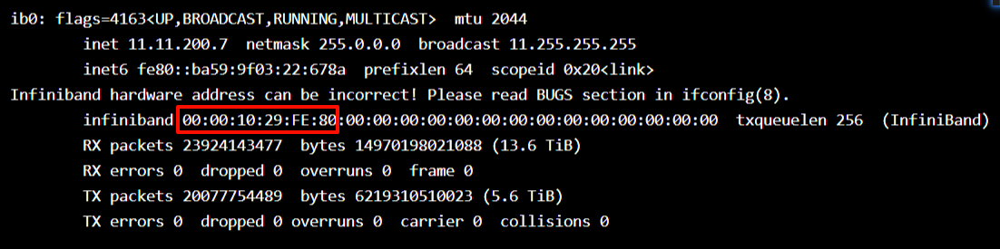
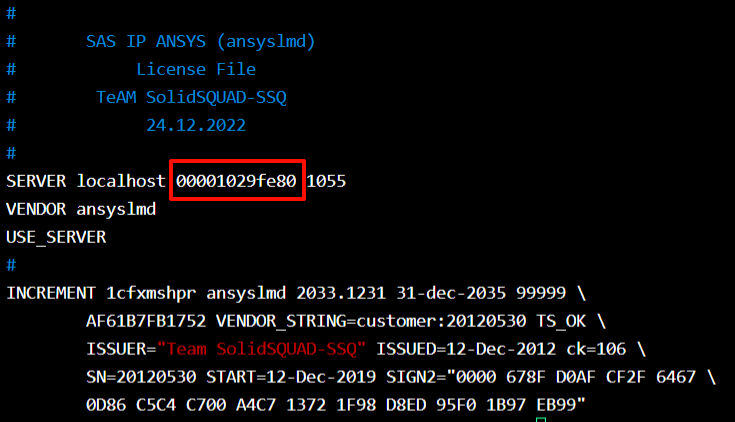

license服务启动
ANASYS
ANASYS系列licesne服务针对2023R1及以上版本都通用，包括ANASYS全家桶Fluent、WorkBench、HFSS等皆可以共用一套license服务
license服务启动流程
工具安装
切换至软件安装包路径,可以提前将本体的几个安装包合并到一个目录下
$ ls
231-1.dvd anssh.ini cads corewb engdata fluentc hlp lmcenter nohup.out sgcharts
231-2.dvd ansys ccm cpythcloudext ensight fluentm icemcfd lsdyna optislang shapeoptimization
231-3.dvd ANSYS.2023.R1.Product.Linux64.iso cff cpythext ensight_components fluentp icemwb manifest package.id solver
aas apdl cfx cpythnew fensap fluents icepak mechsrvplg polyflow speoshpc
acp apipsrv cfxcomon data fluent2d fluentu INSTALL meshing post syscplg
addincfg aqwa chemkin designmodeler fluent2ddp forte instcore mono pyprime tp
addins autodyn clclient distcomp fluent3d framewrk license motion python_site_mapdl turbogrd
additive_cl blademodeler common dpf fluent3ddp fwgfx LICENSE.TXT mw rsm util
anscust builddate.txt commoninstall ecadxltr fluenta geompara licserv nexus sec wbonebld
chmod +x INSTALL
$ ./INSTALL -silent -LM -install_dir /Pathxxx/license
# -silent 静默安装
# -LM 指定只安装 licens 管理器
# -install_dir 指定安装路径
服务启动
安装完成后，切换到shared_files/licensing目录下，将配置好的ansyslmd.lic复制到license_files目录下
$ cd /Pathxxx/license/shared_files/licensing
$ ls
ansysli_data gatherdiagnostics init_ansyslm_tomcat lic_admin linx64 prodord start_lmcenter stop_lmcenter
ansys_pid init_ansysli language license_files logs_backup start_ansysli stop_ansysli tools
$ ./start_ansysli
$ lsof -i:1055
COMMAND PID USER FD TYPE DEVICE SIZE/OFF NODE NAME
lmgrd 19385 jsyadmin 0u IPv6 655429743 0t0 TCP *:ansyslmd (LISTEN)
lmgrd 19385 jsyadmin 7u IPv6 655429767 0t0 TCP localhost:ansyslmd->localhost:53678 (ESTABLISHED)
ansyslmd 19387 jsyadmin 0u IPv6 655429743 0t0 TCP *:ansyslmd (LISTEN)
ansyslmd 19387 jsyadmin 14u IPv4 655400650 0t0 TCP localhost:53678->localhost:ansyslmd (ESTABLISHED)
$ tail -n 10 license.log
15:24:57 (ansyslmd) Listener Thread: running
15:40:28 (ansyslmd) OUT: "cfd_solve_level2" jsyadmin@a09r4n01 [32206]
15:40:28 (ansyslmd) OUT: "cfd_solve_level1" jsyadmin@a09r4n01 [32206]
15:40:28 (ansyslmd) OUT: "cfd_base" jsyadmin@a09r4n01 [32206]
15:40:54 (ansyslmd) IN: "cfd_solve_level1" jsyadmin@a09r4n01 [32206]
15:40:54 (ansyslmd) IN: "cfd_base" jsyadmin@a09r4n01 [32206]
15:40:54 (ansyslmd) IN: "cfd_solve_level2" jsyadmin@a09r4n01 [32206]
15:42:36 (ansyslmd) OUT: "cfd_solve_level2" jsyadmin@login09 [10711]
15:42:36 (ansyslmd) OUT: "cfd_solve_level1" jsyadmin@login09 [10711]
15:42:37 (ansyslmd) OUT: "cfd_base" jsyadmin@login09 [10711]
Tip
1.提前做好爱国版本操作
2.想停止服务可以./stop_ansysli,或者直接杀掉所有相关进程
获取服务
第一种方式是通过环境变量获取
export ANSYSLMD_LICENSE_FILE=1055@a09r4n01
cd /PathToAnsys/shared_files/licensing/
touch ansyslmd.ini
echo 'SERVER=1055@a09r4n01' >> ansyslmd.ini
ansyslmd.lic文件配置
一般安装包里会有license.txt文件，复制一份成ansyslmd.lic即可，需要修改所起服务的端口以及网卡地址，端口选一个没有被占用的就行，默认的1055也可以，网卡地址可以使用ifconfig查询，一般选择一个ib网卡的
$ ifconfig


Tip
1.网卡地址选择前12位
2.localhost可以改成服务所起在的机器名，如果改为机器名，就只能在该机器上启动服务，当然保持localhost也可以
ABAQUS
license服务启动流程
工具安装
切换至软件安装包目录下
$ cd DS_License_Server/AllOS/1/RedHat_Suse/
$ ls
DSLicTarget dsls dsls.service DSLS.tar DSYLicServINSTB InstallServiceDSLS.sh startInstLicServ
$ chmod +x *
$ ./startInstLicServ -noUI -p /Pathto/abaqus/license/install
# -noUI 静默安装
# -p 安装路径指定
Tip
1.licesne工具安装首次需要root,但后续启动服务不需要
2.如果执行提示没有ksh就装一个
服务启动
切换到licesne工具目录，并且将配置ABAQUSLM.lic复制到该目录下
$ cd /Pathto/abaqus/license/install
$ ls
ABAQUSLM CATSettings lmgrd.keywords rlm.keywords SSQ__lmgrd__linux64.bin SSQ__rlm__linux64.bin
ABAQUSLM.lic lmgrd.install lmgrd.uninstall SSQ__lmgrd__linux32.bin SSQ__rlm__linux32.bin
$ ./SSQ__lmgrd__linux64.bin -c ABAQUS.lic -l log
# -c 指定 *.lic 文件
# -l 输出运行日志
查看服务运行
$ lsof -i:27800
COMMAND PID USER FD TYPE DEVICE SIZE/OFF NODE NAME
SSQ__lmgr 35906 indu_soft_crk 0u IPv6 1325915 0t0 TCP *:27800 (LISTEN)
SSQ__lmgr 35906 indu_soft_crk 3u IPv6 1370238 0t0 TCP localhost:27800->localhost:37666 (ESTABLISHED)
ABAQUSLM 35916 indu_soft_crk 0u IPv6 1325915 0t0 TCP *:27800 (LISTEN)
ABAQUSLM 35916 indu_soft_crk 5u IPv4 1370237 0t0 TCP localhost:37666->localhost:27800 (ESTABLISHED)
tail -n 10 log
9:20:16 (ABAQUSLM) IN: "parallel" acho3lnwgg@g01r4n11 (24 licenses)
9:23:51 (ABAQUSLM) OUT: "cae" acho3lnwgg@a03r2n08
9:23:51 (ABAQUSLM) 1782696231/0/6.22-1/0/9999/1/1/cae/23277/acho3lnwgg/unknown/a03r2n08
9:35:08 (lmgrd) TIMESTAMP 6/29/2026
9:35:53 (ABAQUSLM) OUT: "explicit" jianyijian@a01r2n15 (21 licenses)
9:35:53 (ABAQUSLM) OUT: "parallel" jianyijian@a01r2n15 (32 licenses)
9:35:53 (ABAQUSLM) 1782696953/0/6.22-1/0/9999/84/21/exp_par/21836/jianyijian/unknown/a01r2n15
9:36:08 (ABAQUSLM) 1782696968/1/6.22-1/21/exp_par/21836/jianyijian/unknown/a01r2n15
9:36:08 (ABAQUSLM) IN: "explicit" jianyijian@a01r2n15 (21 licenses)
9:36:08 (ABAQUSLM) IN: "parallel" jianyijian@a01r2n15 (32 licenses)
获取服务
第一种方式是通过环境变量获取
export LM_LICENSE_FILE=27800@a09r4n01
cd /PathTo/abaqus2023/linux_a64/SMA/site/
vim EstablishedProductsConfig.ini
LICENSE_SERVER_TYPE=flex
FLEX_LICENSE_CONFIG=27800@a09r4n01
ABAQUSLM.lic文件配置
ABAQUSLM.lic文件里设置服务端口以及启动机器的名称即可
#
# DASSAULT SYSTEMES SIMULIA
# ABAQUS / TOSCA / FE-SAFE / ISIGHT
# LICENSE FILE
#
# TEAM SOLIDSQUAD-SSQ
# 2020/11/25
#
SERVER this_host ID=20170101 27800
VENDOR ABAQUSLM
USE_SERVER
#
Tip
1.27800为服务端口，启动前需保证该端口未被占用
2.this_host可以改成服务所起在的机器名，如果改为机器名，就只能在该机器上启动服务，当然保持this_host也可以